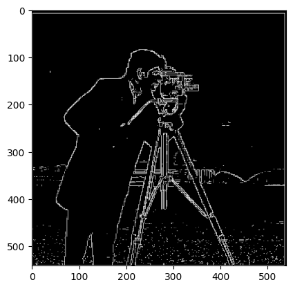
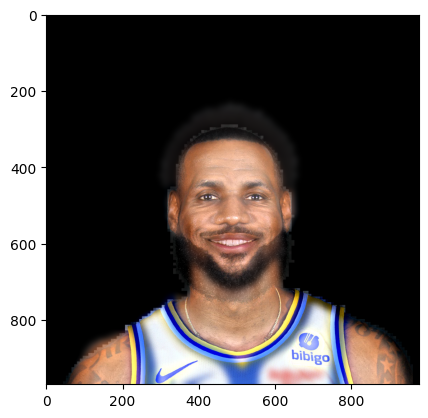
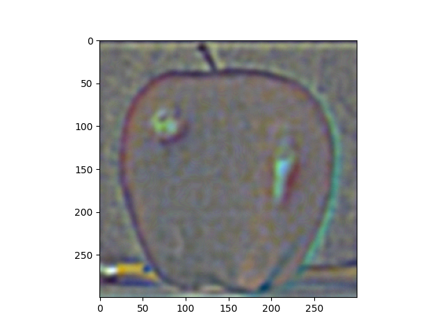

Throughout this project we will discover and recreate image-related concepts and techniques. These
include image derivatives, convolution, sharpening, blurring, gaussian stacks, lapacian pyramids, hybrid images,
frequency manipulation, and multiresolution blending. Credits for the images used go to their respective owners.
Part 1: Fun with Filters
Part 1.1: Finite Difference Operator
We define image derivatives as convolutions that take a specific form. In the case of this assignment, we
consider the following gradient kernels.
$$ dx = [1, -1], \quad dy = \begin{bmatrix} 1 \\ -1 \end{bmatrix} $$
grayscale image with the dx kernel roughly gives the local pixel-wise derivative horizontally across the image.
Let \(p(x,y)\) be the intensity of pixel \((x,y)\). Then, we see that convolving with the dx kernel gives
$$\frac{p(x_0 + 1, y_0) - p(x_0, y_0)}{1} \approx \left. \frac{\partial p(x, y)}{\partial x} \right|_{(x_0,
y_0)}$$
This applies analogously to the dy kernel. These image derivatives can be considered as the following gradient.
$$\nabla p(x, y) = \left(
\frac{\partial p}{\partial x}, \frac{\partial p}{\partial y} \right)$$ Taking the elementwise sum and using the
L2 norm, we get an image \(p'(x,y)\) where $$ p'(x_0, y_0) = \sqrt{\left(\frac{\partial p(x, y)}{\partial
x}\right)^2 + \left(\frac{\partial p(x, y)}{\partial y}\right)^2} $$ In images with defined boundaries, this
computation followed by a qualitatively determined thresholding can serve as an edge detector.
Original Image
dx kernel
dy kernel
Gradient Magnitude

Binarized Gradient Magnitude
Part 1.2: Derivative of Gaussian (DoG) Filter
It is important to note that smoothing the image prior to taking derivatives can result in cleaner, less noisy
edge detections. As such, these kernels are often convolved together, to provide a single multipurpose kernel.
gaussian smoothing, then dx kernel
gaussian smoothing, then dy kernel
dx and gaussian kernel
dy and gaussian kernel
gaussian filter, then gradient magnitude calculation
gaussian filter, gradient magnitude calculation, then binarization
combined gaussian and derivative kernels
combined gaussian and derivative kernels, binarized
Here, we can make two observations. First, notice that convolving with a gaussian smoothing kernel prior to
taking the derivative produced less noisy detections. Even further, the edges themselves are thicker,
brighter,
and more prominent—represented by connected, smooth lines instead of small, fragmented pieces. This is
because
the gaussian filter has removed the high-frequency noise and allowed us to more accurately extract the
desired
low frequency edge information.
Second, notice that we have now done with one kernel what previously required two, and that both of these
pairs of images are nearly identical. There may be discrepancies on the order of a few pixels, but these are
likely floating point errors or slightly different rounding procedures resulting from the varied order of
operations. For all intensive and visual purposes, the combined kernel produces identical results with half
of the convolution.
Part 2: Fun with Frequencies!
Part 2.1: Image "Sharpening"
In this section, we derive and use the unsharp masking technique. This technique works by first using a
gaussian
filter to blur the image (lowpass filter), and then subtracting this lowpassed image from the original to
obtain
the details of the image (highpass filter). These details can then be scaled by some factors
alpha
and added back to the original image as sharpening.
Notice that we can once again use the commutativity and associativity of convolution to combine both of
these steps into one. As, such we can derive a kernel that integrates alpha, the gaussian smoothing kernel,
and the extracted details of the image. We derive it as follows, where Q is the original image, B is the
blurred image, \(h_{gauss}\) is the gaussian smoothing filter, and \(h_{\delta}\) is the unit impulse
identity.
The combined kernel derived above was used to sharpen the following images, allowing for faster computation.
Note that the below images depicting "details" are
exceedingly faint by nature and are more easily visible if opened in full in another window.
Original Image
Blurred Image (Low Frequency)
Image Details (High Frequency)
m = 1
m = 2
m = 3
m = 4
Original Image
Blurred Image (Low Frequency)
Image Details (High Frequency)
m = 1
m = 2
m = 3
m = 4
To test the effectiveness of our frequency-based sharpening, we will first blur an image and then attempt to
sharpen it again. This is depicted below.
Original Image
Blurred Image
Sharpened Image
Notice here that although we were able to restore some of the visual detail using sharpening, much of the
actual detail is lost during blurring. Increasing alpha further causes many of the regions to become
visually distorted. As such, it does a respectable job, although it is unable to reconstruct the detail
present in the old image.
Part 2.2: Hybrid Images
We now continue on to the illusionary technique of hybrid images. Using our gaussian lowpass filter from
before, we combine the low frequencies of one image with the higher frequencies of another image, to produce
an image that looks like two separate things from close and from far away. The images are first aligned to
allow for hybridization, and the cutoff frequencies for each filter and hand-picked.
Before creating all of my selected hybridizations, I will test with color on a singular example. Below is a
comparison of retaining no color, low frequency color, and both frequencies color. Since I believe that the
"both frequencies color" image looks the best, this same style will be applied to the rest of the images.
No Color
Low Frequency Image Color
High Frequency Image Color
Both Frequencies Color
Note that the examples in the below table are for the most part visually appealing. However, the last
row hybridizing a door with a tennis court was a failure. The structure and shape of the aligned too
well, as to overlap. Further, the high-frequency image (the tennis court) was fairly smooth and didn't
contain much detail, and so it is overpowered by the lower frequencies of the door.
Low Frequency Image
High Frequency Image
Hybrid Image (high frequency)
Hybrid Image (low frequency)
Derek + Nutmeg
Lebron + Steph

Baby Expressions
Tennis Court + Door (Failure)
My favorite depiction of hybridization above is the one combining Lebron and Steph. As such, I will be providing
the respective log-magnitude image fourier transform for the respective original, filtered, and hybrid images.
Notice that the lowpass filter removes a lot of the lower frequencies near the original the highpass does the
opposite. The hybridized image fft looks like a combined version of the filtered versions.
Original Lebron
Original Steph
Filtered Lebron
Filtered Steph
Hybrid Image
Part 2.3: Gaussian and Laplacian Stacks
In this section we will be creating our own laplacian and gaussian stacks to aid us in our next goal,
image blending. A gaussian stack is created by recursively smoothing and downsampling, while a laplacian
stack is created by taking the differences of consecutive gaussian stack layers. The following depicts
the normalized versions of these procedures on an apple and an orange.
Level 0
Level 1
Level 2
Level 3
Level 4
Level 5
Level 6
Mask Gaussian Stack
Apple Gaussian Stack
Apple Laplacian Stack

Apple Masked Laplacian Stack
Orange Gaussian Stack
Orange Laplacian Stack
Orange Masked Laplacian Stack
Blended Laplacian Stacks
Part 2.4: Multiresolution Blending
In this section we will collapse the blended laplacian stacks above to construct a smoothly blended orapple
(orange + apple)! I will also be applying this technique to a few other irregularly masked images as shown
below.
Original Image 1
Original Image 2
Mask
Blended Image
Orange + Apple
Space + Mountains
Devin Booker + Lantern
Below I have attached the gaussian and laplacian stacks of the images and masks for both of the other
multiresolution blends.